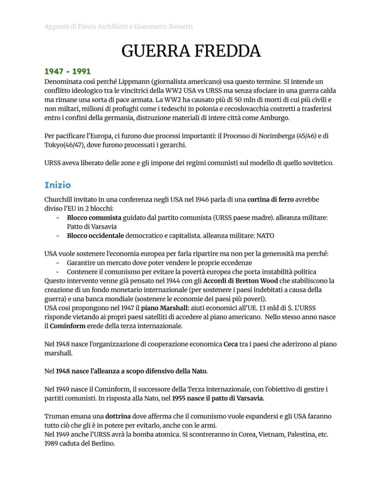

Guerra fredda
Mondo bipolare, USA e URSS, blocchi, deterrenza nucleare, crisi e fine del sistema sovietico.
Studio guidato
Mondo bipolare
Dopo il 1945 il sistema internazionale si organizza attorno a due superpotenze: Stati Uniti e Unione Sovietica. Il conflitto è detto “freddo” perché evita lo scontro diretto generale, ma produce guerre locali, propaganda e competizione globale.
Blocchi
Gli USA guidano il blocco occidentale capitalistico e liberaldemocratico; l’URSS guida il blocco orientale comunista. Piano Marshall, NATO, Comecon e Patto di Varsavia consolidano la divisione.
Crisi
Berlino, Corea, Cuba, Vietnam e Afghanistan mostrano la pericolosità del confronto. La deterrenza nucleare rende possibile la pace armata: nessuna superpotenza vuole rischiare distruzione reciproca.
Distensione e crisi sovietica
Dopo fasi di tensione arrivano momenti di distensione. Negli anni Ottanta Gorbachev avvia perestrojka e glasnost, ma il sistema sovietico entra in crisi.
Fine
Il muro di Berlino cade nel 1989. Nel 1991 l’URSS si dissolve e termina l’ordine bipolare della guerra fredda.
Parole chiave
Pagine originali dal file
Le immagini sotto mantengono il riferimento diretto alle pagine del PDF usato come base del sito.

Quiz finale
Devi rispondere correttamente a tutte le 12 domande. Se ne sbagli anche solo una, il quiz si azzera e ricomincia da capo.